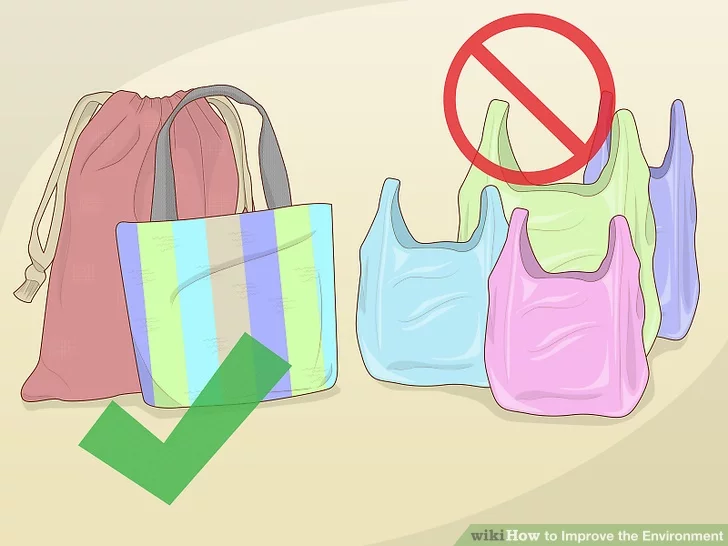
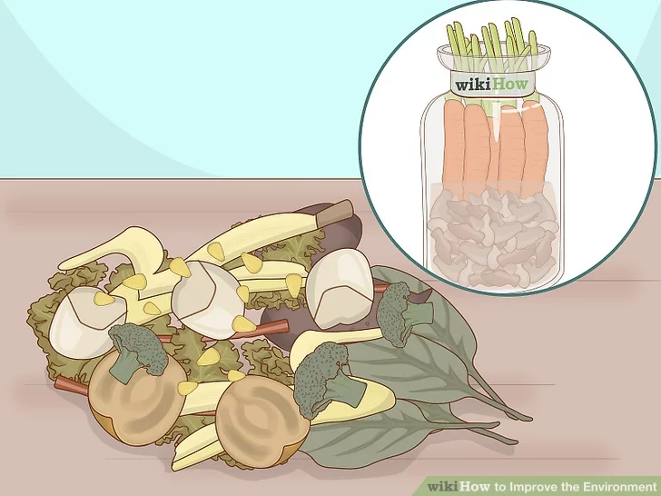
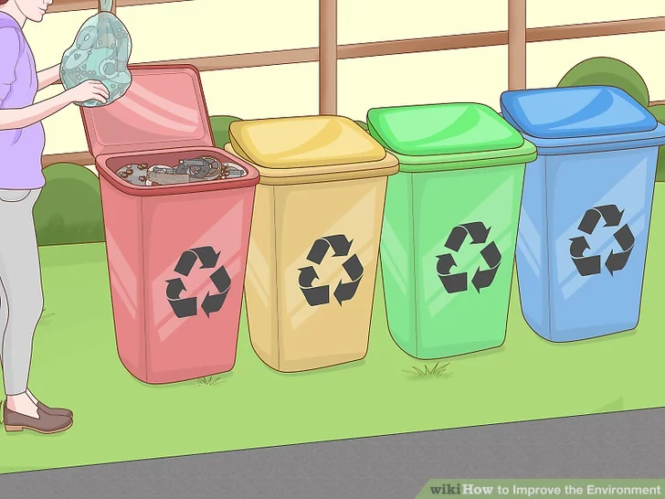
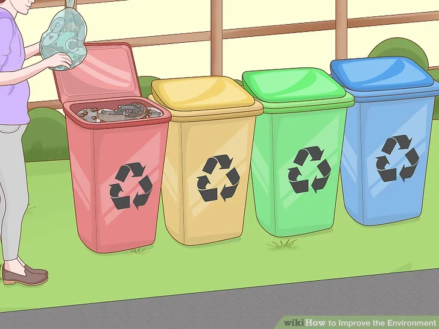
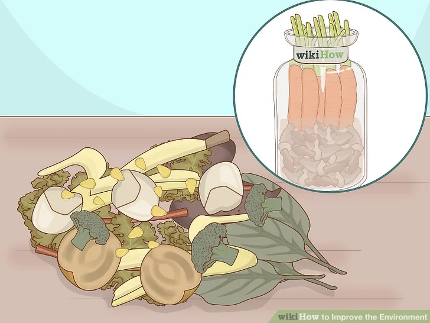
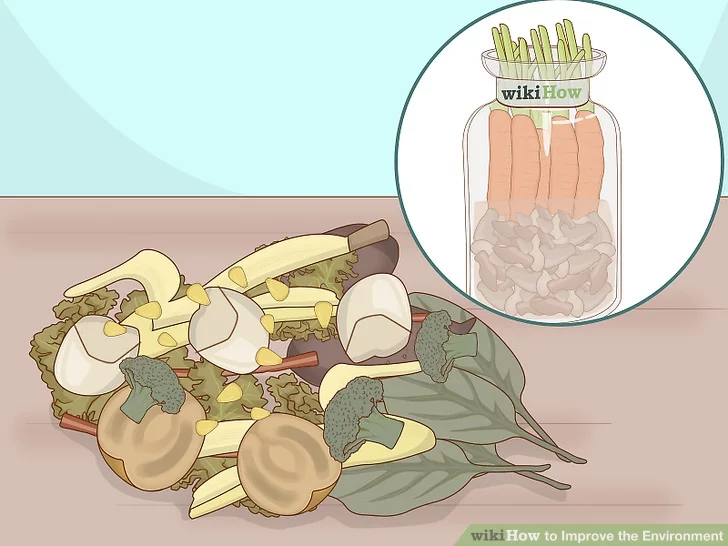

One of the most basic methods for improving is, of course, recycling. Plastic items with every number of resin identification code is recyclable, but varies from location to location

Avoid utilizing plastic bags if at all possible. Reusable bags (such as cloth bags) are an alternative, and after 6-10 uses, you make up for the energy used to make it. After your reusable bag is ineffectual, it can be given to the Grateful Thread.

One of the most basic methods for improving is, of course, recycling. Plastic items with every number of resin identification code is recyclable, but varies from location to location.
 

 
